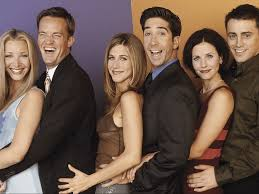

Friends é uma série de televisão americana do gênero sitcom, criada por David Crane e Marta Kauffman.
Foi exibida originalmente pela NBC de a .

Elenco principal.
Sinopse
A série acompanha um grupo de seis amigos — Rachel, Monica, Phoebe, Joey, Chandler e Ross — que vivem em Manhattan, Nova York, enquanto lidam com relacionamentos, trabalho e crescimento pessoal.
Personagens Principais
Rachel Green
Rachel começa como garçonete e evolui para o mundo da moda. Interpretada por Jennifer Aniston.
Monica Geller
Monica é uma chef competitiva e irmã de Ross. Interpretada por Courtney Cox.
Phoebe Buffay
Phoebe é excêntrica e canta músicas como “Smelly Cat”. Interpretada por Lisa Kudrow.
Joey Tribbiani
Joey é ator e ama comida. Conhecido pelo bordão: How you doin'?. Interpretado por Matt LeBlanc.
Chandler Bing
Chandler é sarcástico e trabalha com análise de dados. Interpretado por Matthew Perry.
Ross Geller
Ross é paleontólogo e irmão de Monica. Interpretado por David Schwimmer.
Temporadas
A série possui 10 temporadas. Confira:
1ª Temporada (1994–1995)
2ª Temporada (1995–1996)
3ª Temporada (1996–1997)
4ª Temporada (1997–1998)
5ª Temporada (1998–1999)
6ª Temporada (1999–2000)
7ª Temporada (2000–2001)
8ª Temporada (2001–2002)
9ª Temporada (2002–2003)
10ª Temporada (2003–2004)
Curiosidades
Os atores começaram ganhando US$22 mil por episódio e terminaram com US$1 milhão por episódio.
A moldura amarela da porta do apartamento de Monica foi um acidente de produção.
O Central Perk foi inspirado em um café de Nova York chamado “The Little Owl”.
Legado Cultural
A série deixou frases marcantes como We were on a break! (Ross) e Oh. My. God! (Janice).
Hoje, Friends é apenas mais uma série Friends é um ícone da cultura pop!